One change to a character’s traits, and the review that follows
An edit kit is an item that buys one change to a character’s traits. A community sells or awards one; the member spends it on a character they own, changes what they like, and submits. Staff then approve or refuse the change.
It is an ordinary usable item whose type has been told which characters it works on — so it can be traded, granted, sold in the shop, and it has a provenance page like anything else.
Which species, and optionally which variants
Any number of traits, in one submission
Nothing changes on the character before then
This is the opposite of every other trait review in CharDB. When a character is created — by hand, by an import, or with an MYO slot — its traits are written straight away and the review ratifies them afterwards. That works because the character is new and nobody had expectations of it.
An edit is different. Applying first would mean a member wearing an unapproved trait for as long as the queue took, and then losing it in public if it was refused. So a proposed edit waits in the review, and approving is what writes it.
The badges say which is which:
| Badge | What the traits on screen are |
|---|---|
| Traits Pending Review | Provisional. They are on the character and staff have not signed them off. Comes from a creation, an import or an MYO. |
| Trait Change Pending Review | Settled. These are the approved traits; a change to them is waiting. Comes from an edit kit. |
On an item type’s edit form, under Administration → Items, there is an Edits on use panel listing the community’s species. Tick the ones the kit works on.
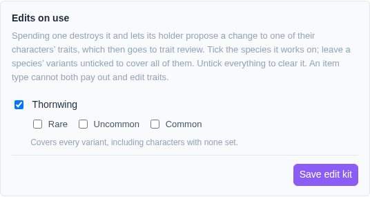
Tick variants to narrow it. A kit limited to Common will be refused on an Uncommon of the same species.
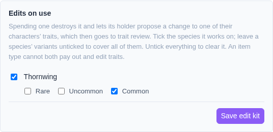
A kit can name several species, each narrowed separately or not at all. Untick everything to clear the kit.
Only a consumable item type can be an edit kit, for the reason every usable item is consumable: spending it is what uses it up.
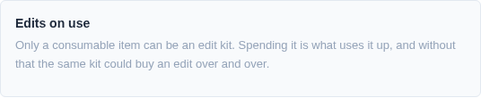
An item type does one thing when used. A type that already pays out currency or makes characters cannot also edit traits — clear the other one first.
The item type’s page lists every species the kit covers and the variants it is limited to. It is public, so somebody considering a trade for one can read it without holding it.
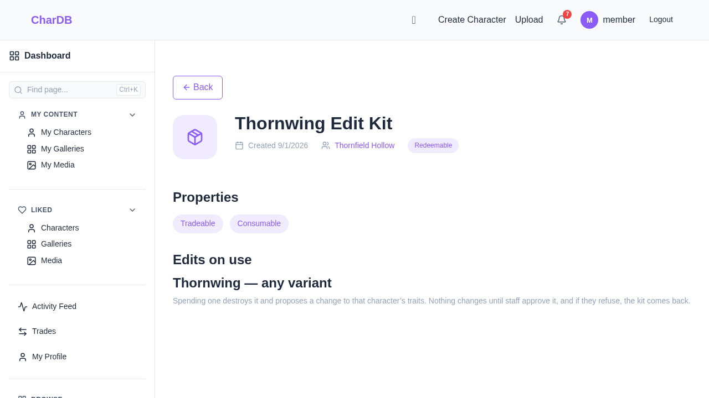
There are two ways in, and they meet at the same editor.
From the character. A character you own shows a Use an edit kit action when you actually hold a kit that works on it. This is the one most people will use — the character is what you are thinking about.
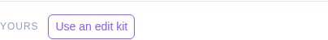
From the kit. In your inventory, an edit kit carries an Edit a character button, which opens a list of the characters that kit can change.
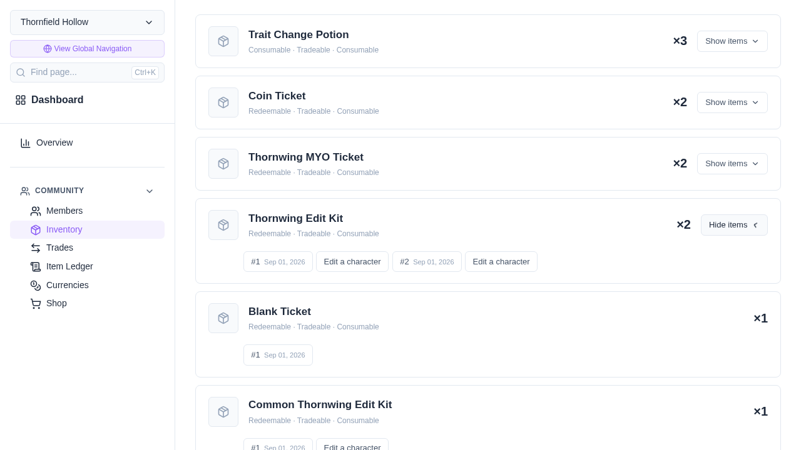
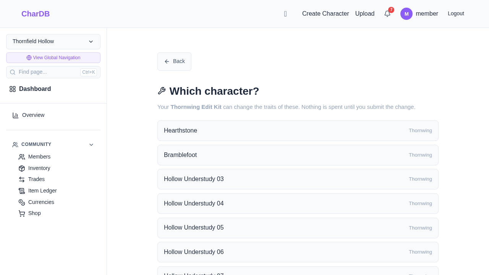
The form opens on the character’s current traits, not an empty sheet — this is an edit, so it starts from the design that exists. Change as many traits as you like; one kit covers the whole submission.
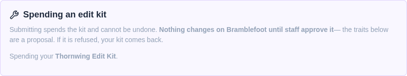
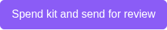
Two things the editor will not let you do:
Submitting a change that is identical to what the character already has is refused, and the kit is not spent — opening the editor and thinking better of it should not cost anything.
The kit is gone and the character is unchanged. Its page shows the approved traits with a Trait Change Pending Review badge.
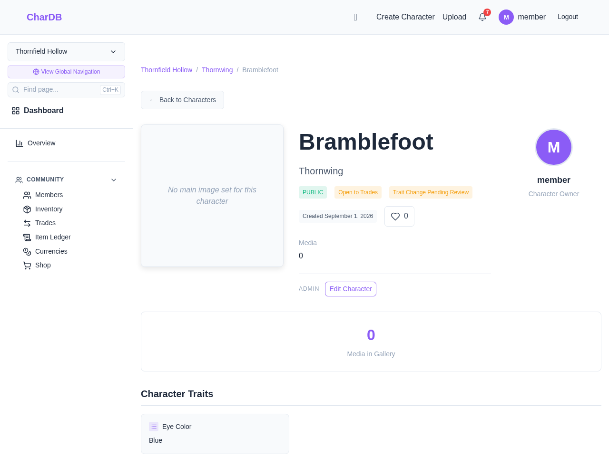
One change at a time. A character with a pending change will not accept a second kit — and the second kit is refused before it is spent, not after.
The change lands in Moderation → Trait Reviews, tagged User Edit, showing what is proposed against what the character has now. Reviewing needs the edit any character’s registry permission.
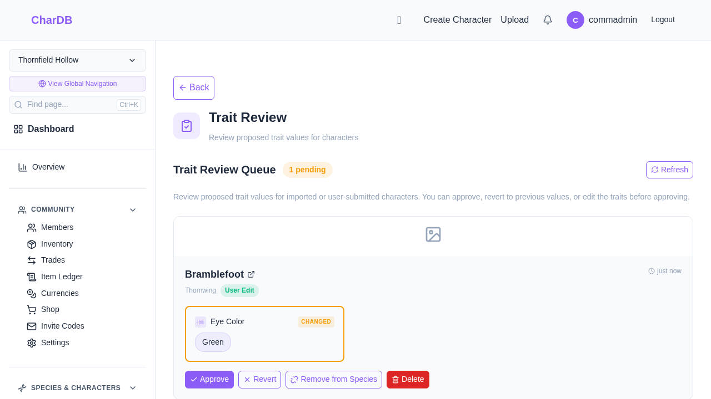
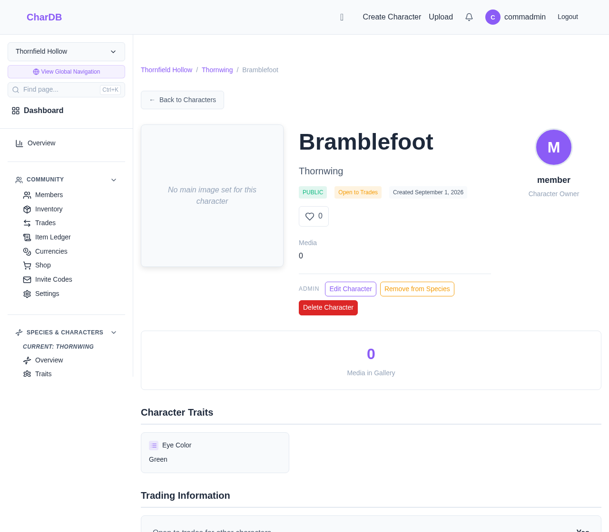
Refusing changes nothing about the character — there is nothing to undo, because the proposal was never applied — and returns a kit of the type that was spent. The member can try again with something that passes.
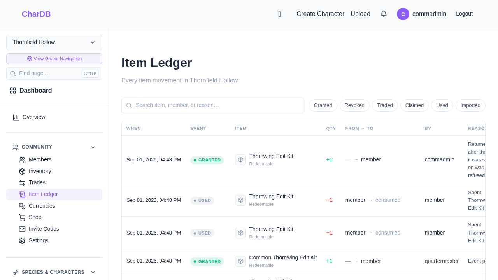
| Reason | Why |
|---|---|
| The character is not yours | A kit edits your own characters. |
| The kit does not cover that species | Checked against the kit’s own list, not against the community. |
| The kit does not cover that variant | Only when the kit names variants for that species. A species with none listed covers all of them. |
| That character already has a change awaiting review | One at a time. Refused before the kit is spent, so nothing is lost. |
| The change would change nothing | Submitting the traits the character already has would spend a kit for no reason. |
| The item type is not consumable | Spending is what uses it up. |
| The kit works on nothing yet | Consumable, but no species configured. |
| You have left the community | A species belongs to one community. |
| The kit is not yours, or is already spent | Checked at the moment of the write, so a trade landing in between cannot be raced. Submitting the same form twice spends one kit. |
In every case the kit survives.